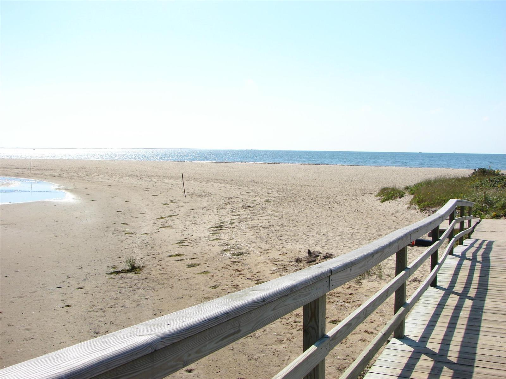
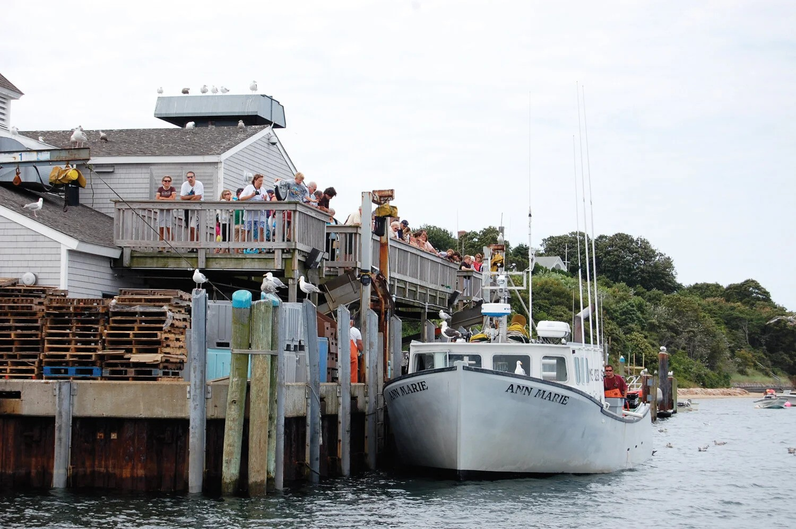
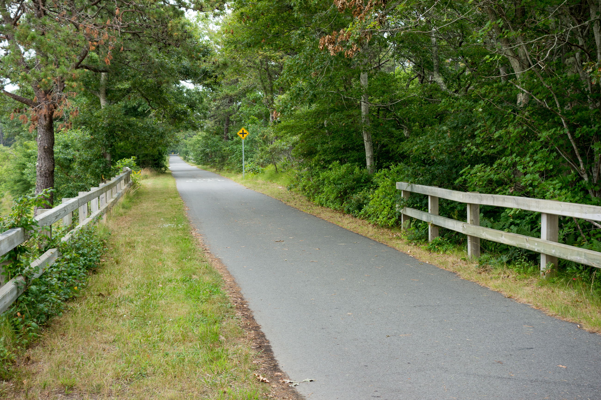
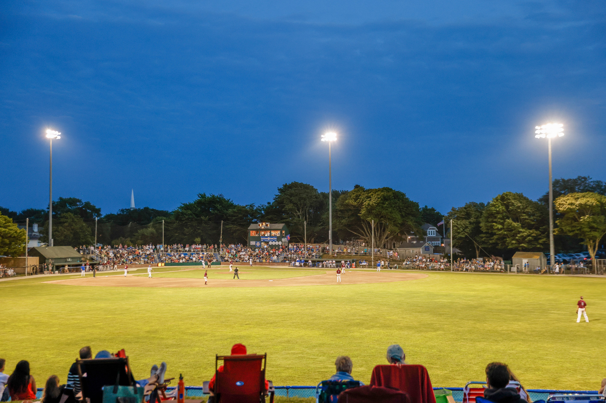
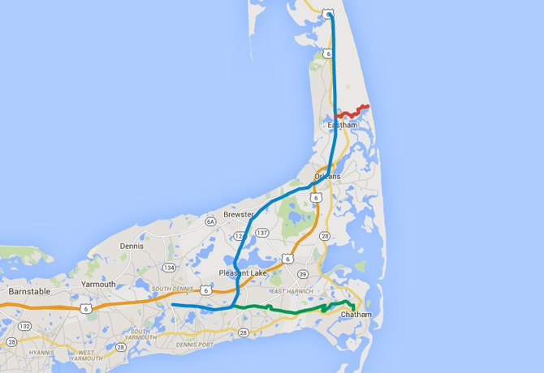
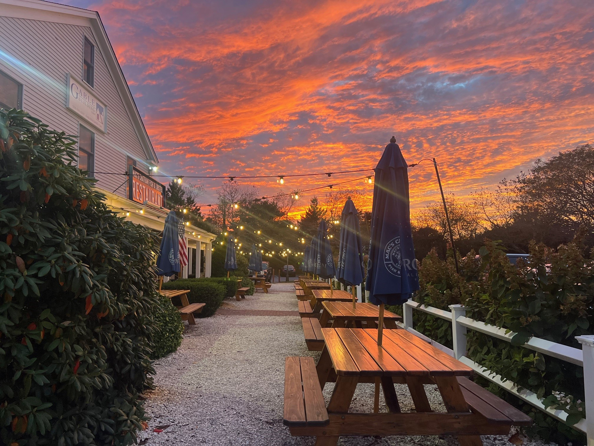
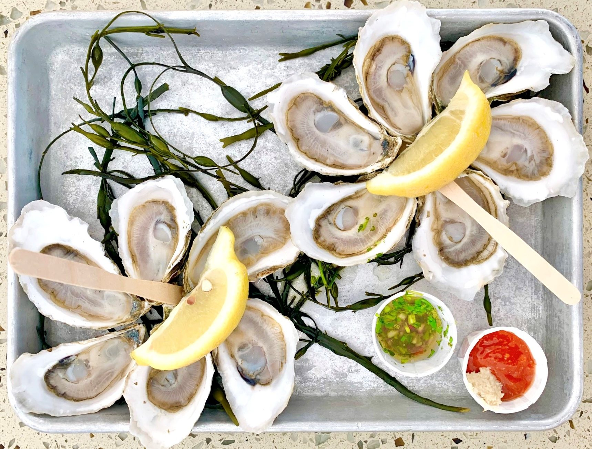

Beaches
Chatham has many! Here are our favorites. We have beach chairs, umbrellas, bikes & helmets, beach toys and lots of towels available for your use.

🌊 Forest Beach
- The closest beach is Forest Beach on Nantucket Sound, 1.4 miles south (Forest Beach Rd. is directly across Rt. 28/Main St.)
- There is a small parking lot with free parking
🏛️ Chatham Lighthouse Beach
- On Chatham Harbor, 5.4 miles west (take Main St. through Chatham center); great for walking, sunsets, and sun-bathing
- Historic US Coast Guard station and lighthouse across street. Some cool monuments to see too
- Free parking and don't worry if the parking lot is full, people come in and out frequently and a spot will open up
- There is a long flight of stairs and a fairly long walk to the water from the parking area
🏖️ Ridgevale Beach
- On Nantucket Sound, 2.0 miles south (Cockle Cove Rd. is east on Rt. 28/Main St), is great for small children with shallow tidal flats and sandy beach
- $10 parking. The Ridgevale Beach Snack Bar is accessible across a short walking bridge
- Ridgevale Beach store rents beach equipment & Chatham Sail rents sail boats, kayaks & paddle boards
🌅 Harding's Beach
- On Nantucket Sound, 3.9 miles southeast (east on Rt. 28/Main St. to Barn Hill Rd. off rotary)
- $10 ample parking (2 lots), restrooms. Great beach for families
- There may be a lot of seaweed accumulation in July & August, but there are still good areas to swim
- Nice walk to Stage Harbor Lighthouse, which offers good swimming, though note the swift currents between tides
- You may find a dead seal carcass (or more) on the walk down to the lighthouse
🐕 Jackknife Harbor Beach
- On Pleasant Bay, 2.8 miles (northeast)
- Free parking, shallow water, and nice walk where dogs are welcome before 9:00am and after 6:00pm
Other favorites away from Chatham:
🌊 Paine's Creek
- In Brewster, 8.4 miles (northeast)
- Shallow water tidal flats on Cape Cod Bay. Great for kids and families, and great at sunset and low tide
- Parking can be limited; check the Town of Brewster for parking info: https://brewsterstickers.townhall247.com
🏖️ Skaket Beach
- In Orleans, 9.5 miles (north)
- Another shallow water tidal flat on Cape Cod Bay. Also great for kids and families
- Lots of parking but get there early. Pay $20 at the parking booth
- Has restrooms, snack bar and changing area
🦀 Provincetown Causeway
- In Provincetown, 38 miles (north)
- Explore the tidal flats at low tide and see starfish and other critters
- Walk the 2.5 mile (round trip) atop boulders connecting two ends of the Provincetown peninsula
- Street parking near Pilgrim's First Landing Park; parking can be limited
🏖️ Race Point Beach
- In Provincetown, 37 miles (north)
- Part of Cape Cod National Seashore with lifeguards, restrooms and changing areas
- Great sandy beaches. Ample parking at $25 per day
Activities




🦭 Chatham Pier Fish Market - Seal Watching
- Visit the Chatham Pier Fish Market to see the seals that gather around the pier
- A great family activity to observe local marine wildlife
- Located in Chatham Harbor, the seals are often visible from the pier area
🚴 Old Colony Rail Trail
- 0.4 miles south on Morton Road, which is the center of this 8-mile trail spanning Harwich and Chatham
- Intersects Cape Cod Rail Trail at Harwich Bicycle Rotary (4 miles west)
- A great way to access Harwichport, Sam Ryder Forest, White's Pond (with swimming), and downtown Chatham
- We have several bikes and helmets in the basement
🥾 Walking Trails
- There are many wooded and beach trails in Chatham
- One walk is south on Morton Rd. on left
- Forest Beach (across Rt. 28) also has a walking area – parking off Bay View Rd
- More trails can be found on: https://www.chathamconservationfoundation.org/trailguide
⚾ Chatham Anglers Baseball
- Go see a Chatham Anglers game at Veterans Field
- Part of the prestigious Cape Cod Baseball League
- Watch top college players compete in America's premier summer collegiate baseball league
- Family-friendly atmosphere with affordable tickets
- Games typically run from June through August
Dining Options
We have a well-stocked kitchen and BBQ with spare propane tanks in the basement, but if you are looking to go out, here are our favorites


On the way to Chatham Center
🐟 Mac's Chatham
- You can't go wrong with Mac's Chatham. Don't be intimidated by the long line of people standing out in the parking lot
- The line moves fast as you order at the counter. They will then hand you a number, while you find a place to sit; the food comes quickly
- They have a great fresh fish market if you are grilling at the property
🍽️ Pate's
- More upscale vs. Mac's Chatham. Great for a sit-down dinner
🥩 Chatham Cut
- Also great sit-down option. Great steaks
🍤 Kream & Kone
- Really good fried seafood platters in a casual setting; great for takeout
🍔 Mom & Pop Burgers
- Really good hamburgers and other grill options; great for takeout
🥧 Marion's Pies
- A local institution…we have a menu on the refrigerator
- Best to go at 2pm to see what they will have at 5pm
- They'll have a mix of savory and sweet pies for takeout
In Chatham Center, all will need reservations at peak hours
🦪 Impudent Oyster
- Great food
🍷 Viera on Main
- Really great food with a Portuguese twist
🍺 Wild Goose Tavern
- Idyllic setting in the prime spot of Chatham
🍣 Bluefin
- Really good sushi
In Harwich
🐒 3 Monkeys
- In Harwichport Center, really good food and vibe
🌊 Brax Landing
- In Harwichport, great view, good food
Questions During Your Stay?
If you have any questions while staying at Tres Gallos, please don't hesitate to reach out.